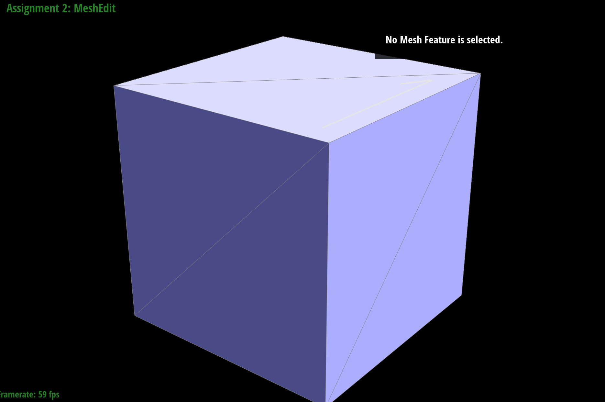

Section I: Bezier Curves and Surfaces
Part 1. Bezier curves with 1D de Casteljau subdivision
de Casteljau's algorithm is a technique for evaluating the optimal bezier curve for a given set of control points.
For each two consecutive control points, we calculate an interpolated intermediate point with distances proportionate to t : (1-t) to each of them, using a predetermined ratio t. We repeat this procedure recursively on subdivisions until we have one final interpolation point. The bezier curve is computed with two endpoints in the initial set of control points and the final interpolation point.
In my implementation, I looped through all the control points up till the second last point, compute the interpolated intermediate point of the current point and the next point, and store the value into a C++ vector.
Bezier curve 1
Bezier curve 2
Here I created my own Bezier curve with 6 control points of my choosing. Below, there are screenshots of each step / level of the evaluation from the original control points down to the final evaluated point.
0
1
2
3
4
5
The final bezier curve defined by given parameters is:

I also tried moving control points around and modifying the parameter t via mouse scrolling.
When I move the control points around, each layer of interpolation changes accordingly and the resulting bezier curve varies, as shown below.
However, when I only change the parameter t by scrolling my mouse, the bezier curve remains the same even if the final interpolation point is different. But no matter how it changes, it moves along the green bezier curve.
Part 2. Bezier surfaces with separable 1D de Casteljau
Computing bezier surfaces using de Casteljau's algorithm uses essentially the same logic as computing bezier curves.
Instead of one single ratio t, we are given two ratio (u, v) to do interpolation. Think of the surface as multiple “moving curves”, where each curve can be determined using the bezier curves method described in part 1, but with interpolation ratio u. After having evaluated each “moving curve”, we can perform another de Casteljau recursive interpolation on these points using ratio v to determine the surface point position.
In bezierCurve.h, ControlPoints is a 2d vector. For my implementation, I first looped through it to compute the final interpolated point for each sub-vector, aka determining each “moving curve”. I store the value of these points in a temporary C++ vector, and perform another evaluate1D() on this temporary vector, whose result is the surface point position.
Section II: Triangle Meshes and Half-Edge Data Structure
Part 3. Area-weighted vertex normals
In this part, we upgrade the mesh shading technique from default flat shading to the better-looking phong shading for mesh rendering, which makes the objects surface appear smooth and less blocky. To achieve the effect of phong shading, we shade each pixel. The value of each pixel is deduced from neighboring vertices using barycentric interpolation, in terms of normal vectors.
We infer vertex normal vectors from surrounding triangle faces regarding their respective area. In my implementation of the area-weighted vertex normals, I constructed two loops nested. For each vertex, first loop through all the half-edges pointing away from it, where each half-edge corresponds to a surrounding face. Then, for each face that corresponds to the current half-edge, calculate its normal vector. This requires another loop to go through all the half-edges that circulate the area, in the default counterclockwise winding order.
Flat shading vs phong shading for teapot.dae, beetle.dae, cow.dae and maxplanck.dae.
My implementation for calculating the normal vectors:
The cross product of two vectors is the normal vector and the magnitude of this cross product is the area of the bounded parallelogram. Using this mathematic insight, I imitated the logic of “Vector3D normal( void ) const;” method provided in halfEdgeMesh.cpp, face class, to calculate the normal vector of a face, except for each face I don’t normalize the normal vector, but instead add them up directly, thereby preserving their original length that is at proportion to face areas.
At the end of my function, where I have all the normal vectors combined as one, I perform normalization on that vector and turn it into a unit vector. This is the area-weighted vertex normals.
Part 4: Edge flip
Mesh rendering relies on the implementation of half-edges, edges, vertices and faces. To do an edge flip is to do pointer reassignments on all of the affected mesh elements to make sure that the mesh renders as expected after the operation. (an illustration taken from the lecture slide: )
Before writing any code, I drew a graph and labeled all vertices, edges, half-edges and faces. Using the “before and after” visualization, I did an exhaustive enumeration of all the mesh elements that I (might) need to do pointer reassignments: 4 vertices (v0, v1, v2, v3), 1 edge (e0), 6 half-edges (h0, h0_1, h0_2, in the first triangle, h1, h1_1, h1_2 in the second triangle) and 2 faces (f0, f1).
For each vertex, I update the half-edge pointer to any of the new half-edges coming out of the vertex; for each edge, I update the half-edge pointer to h0, and for each face, I update the half-edge pointer to their old respective value, but I feel like the edge and face part can be omitted and I included them just for the sake of implementation completeness; for each half-edge, I used setNeighbor() function to update their “next”, “twin”, “vertex”, “edge”, “face” pointers according to my graph. I update every pointer even though some of them remain the same despite the edge flip operation.
Some screenshots showing the effects of edge flip:
0
1
2
3
4
Comment on the results: Some triangles degenerate after doing edge flip; they look darker than they are supposed to. Some edge flip cannot be reverted because some flip will cause the edge to be in the same position as other existing edges.
Edge case: for the mesh that contains boundary, make sure the program does not crash. Below is an attempt to perform edge flip on the boundary for beetle.dae
before
after
flipped back
Due to my implementation trick where I went to length to list and label all the mesh parts before writing any implementation code, and did exhaustive pointer assignment even for ones that should be the same before and after an edge flip, my program went smoothly and I did not encounter any bug the first time it ran! (except compile errors).
Part 5: Edge split
Edge split operation is, as described in the project specs, “given a pair of triangles (a,b,c) and (c,b,d), a split operation on their shared edge (b,c) inserts a new vertex m at its midpoint and connects the new vertex to each opposing vertex a and d, yielding four triangles. ”
Part 5 is very similar to part 4; I just need to create a few mesh elements before doing pointer reassignments. There are three parts of my implementation. First, I get a pointer reference of every half-edge, vertex, edge and face element of the two triangles, pre edge split. Then, I create the new elements generated in the split, which are specifically 1 vertex m; 2 faces f2, f3; 3 edges e1, e2, e3; and 6 half edges am, ma, md, dm, mb, bm. At the end, I modify the pointers of each element to appropriate values. To ensure code completeness and that I did not miss anything, I still made an update to the pointers that I believed to remain the same.
An implementation trick: drew a detailed graph pre edge split and post edge split, assume that the half-edge pointer of the given edge e0 points to half-edge “bc” (that points from b to c), label EVERY mesh element, and highlight the ones newly created in the operation.
Edge case: I check if the edge is on the boundary at the beginning of my implementation, and return immediately if so.
icosahedron before edge split
torus before edge split
icosahedron after edge split
torus after edge split
Before and after a combination of both edge splits and edge flips:

cube.dae
edge split
edge split + flip
After having implemented part 4, part 5 is pretty straightforward and the biggest trouble is just spelling all the mesh elements’ names right because there are so many of them. I drew a “before-and-after” graph, labeled each element before writing any code, maintained a clear and organized code structure, and successfully achieved the expected results on my first attempt.
Edge split operation is, as described in the project specs, “given a pair of triangles (a,b,c) and (c,b,d), a split operation on their shared edge (b,c) inserts a new vertex m at its midpoint and connects the new vertex to each opposing vertex a and d, yielding four triangles. ”
Part 5 is very similar to part 4; I just need to create a few mesh elements before doing pointer reassignments. There are three parts of my implementation. First, I get a pointer reference of every half-edge, vertex, edge and face element of the two triangles, pre edge split. Then, I create the new elements generated in the split, which are specifically 1 vertex m; 2 faces f2, f3; 3 edges e1, e2, e3; and 6 half edges am, ma, md, dm, mb, bm. At the end, I modify the pointers of each element to appropriate values. To ensure code completeness and that I did not miss anything, I still made an update to the pointers that I believed to remain the same.
An implementation trick: drew a detailed graph pre edge split and post edge split, assume that the half-edge pointer of the given edge e0 points to half-edge “bc” (that points from b to c), label EVERY mesh element, and highlight the ones newly created in the operation.
Edge case: I check if the edge is on the boundary at the beginning of my implementation, and return immediately if so.
icosahedron before edge split
torus before edge split
icosahedron after edge split
torus after edge split
Before and after a combination of both edge splits and edge flips:
cube.dae
edge split
edge split + flip
After having implemented part 4, part 5 is pretty straightforward and the biggest trouble is just spelling all the mesh elements’ names right because there are so many of them. I drew a “before-and-after” graph, labeled each element before writing any code, maintained a clear and organized code structure, and successfully achieved the expected results on my first attempt.
Part 6: Loop subdivision for mesh upsampling
For part 6, I implemented loop subdivision, which is the algorithm for converting a coarse polygon mesh into a higher-resolution one for better display. This technique alleviates the sharp edges and adjusts the irregular vertices so that the mesh in entirety looks more smooth.
Theoretically, this algorithm comprised of two parts: subdividing each triangle in the mesh into 4 smaller triangles, and then update vertex positions to be weighted average of their neighboring vertex positions. However, when I actually tried to write it in code, I realized there are in fact three steps needed in the implementation, because for each level of subdivision, both the new vertices’s positions and the edge split midpoints are determined using old vertex positions, therefore I need to precompute and store all the new positions before doing any edge splitting and flipping.
There are 3 parts in my implementation:
1. compute new positions for all the vertices in the input mesh, and position of the edge split point for all edges, using the Loop subdivision rule.
2. Loop through every edge and perform an edge split on the old edges, then loop through every edge again and flip the necessary new edge created in previous work. (there is a pitfall for a new edge case, which will be discussed in my debugging trick)
3. Now that we are done with the current level of subdivision, we can finish up by setting every edge to “not new” and update all the old vertices to precomputed new positions.
Results of loop subdivision are shown below.
level 0
level 1

level 2
level 3
level 4
level 0
level 1
level 2
level 3
level 4
Debugging process:
There are many pitfalls in this part. The biggest difficulty I have encountered is how to handle one of the new edges created in edge split when the original edge gets split in two. We should not split it anymore because it is a new edge, but we also should not flip it even if it connects an old vertex with new vertex because it is part of the black edges, not the dotted ones. Therefore it’s tricky whether we should set its “isNew” value to true or false.
The initial results I got when I didn’t know:
ugly screenshot
My debugging trick is to comment out all other parts except edge split and edge flip, which narrowed down my search. This allowed me to quickly pinpoint the problem.
There are many ways to solve this problem. My fix is to set those tricky edges to “isNew = false” so that edge flip works as intended. When doing edge split, I perform an extra check to not only see if the edge is old, but also whether both connected vertices are old vertices. This prevents edge split from having an infinite loop.
it is clear to see that the sharp corner and edges are getting smoothed during the process, and after doing some level of loop subdivision, they become an even surface (as demonstrated by the results shown below). The sharp corners and edges are lost.
However, we can do some edge split in advance to preserve some of those shapes:
Original Mesh
Pre Edge Split
Subdivision
Original Mesh

Pre Edge Split
Subdivision
For dae/cube.dae, the original mesh is a symmetric cube, but the sube becomes slightly asymmetric after repeated subdivisions due to its asymmetric initial edge split, as shown below.
level 0
level 1
level 2
level 3
level 4
Originally, each side of the cube is divided into two triangles, with the division pointing at the same direction on each side. The initial split is one-sided to some extent, therefore resulting in a tilting result after many level of subdivisions. To correct the asymmetric effect, I pre-processed the cube: split each side one more time to create a symmetric initial division, as shown below.

Original Mesh
Pre-prossessing
With edge-split pre-processing, the result becomes an even and symmetric cube.